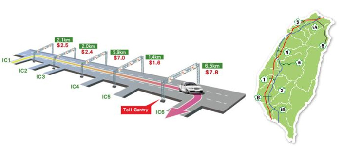

With Taiwan ETC’s experience, we assure your project will be successful!
We have obtained extensive and comprehensive ETC planning, designing, implementing, and operational experiences in Taiwan, the first country in the world successfully transformed its nationwide freeway tolling from traditional manual tolling system to nationwide RFID MLFF all electronic tolling. RFID MLFF is a proven Electronic Road Pricing (ERP) system with sophisticated system and service capability, allowing the Taiwanese government to control highway congestion with efficient and effective results.
FETC is responsible for the Taiwan freeway ETC total solution, including front-end and back-end systems as well as business model, from planning, designing, building, testing, and operation.

 |
Public-Private Partnership model in Strategy, Policy, Design for highway Toll Collection System |
|
| For the purpose that freeway road users can pay tolls more effectively and equally neither stopping cars, nor using cash, Freeway Bureau, MOTC programs a BOT/PPP project which is called “Private Sector Involvement in Development of Electronic Toll Collection System” with Far Eastern Electronic Toll Collection Co. (FETC). Considering the public acceptance issue, NFB planned two stages to achieve these goals. First ETC lane were launched in every toll Station since 2006. |
|
|
Migration Strategies and End-to-End integration from DSRC to RFID |
|
The Year 2006-2012 : Introduced flat-rate pay-per-use IR DSRC ETC
In 2006, FETC successfully launched flat-rate pay-per-use ETC among 23 toll plazas with IR DSRC technology, and the utilization rate had remained at approximately 40% for years, which was not sufficient to implement the policy – achieving a distance-based and multi-lane free flow (MLFF) nationwide ETC system. |
 |
| |
|
The Year 2012-2014: Migrated from IR DSRC to RFID, from Barrier Base to MLFF
Therefore, RFID was introduced to Taiwanese road users later on in 2012 and with a rapid growth of public enrolment. The ETC usage rate accelerated from 43% to 94% from May 2012 to Jan 2014 and the system was compatible with both IR DSRC and RFID coexisting operation. This 1.5-years migration process with well-planned rollout strategy and incentive programs allow sufficient ETC penetration and society readiness for Freeway Bureau, MOTC and FETC introducing MLFF with 319 gantries to road users on December 30th 2013. All the efforts to seamless migration not only from IR DSRC on-board-unit (OBU) to RFID tag, but also from barrier-based tolling to MLFF have paid off. Currently more than 7 million users in Taiwan benefit from the ETC with more than 6 billion accumulated transactions
|
|
|
Toll Station Tolling to Open Road Tolling |
|
The Year 2006-2012 : Introduced flat-rate pay-per-use IR DSRC ETC
In 2006, FETC successfully launched flat-rate pay-per-use ETC among 23 toll plazas with IR DSRC technology, and the utilization rate had remained at approximately 40% for years, which was not sufficient to implement the policy – achieving a distance-based and multi-lane free flow (MLFF) nationwide ETC system. |
|
|
Design, Build, Operation and Maintenance |
|
• Electronic Road Pricing
This is a multi-lane free flow and distance-based ETC system which supports road pricing and various charging models are based on toll zones, transactions time, trip distance or a combination of the above. |
|  |
• Proven Field Performance in Accuracy KPIs While the Daily Transaction Volume Increased by 10 Times from Previous Flat-rate Pay-Per-Use ETC to Distance-based MLFF ETC
|
Fast Deployment of 319 Gantries (Around 1,300 Lanes) Within Just 10 Months with Zero Working Accident, High Quality and High-efficiency Performance
• Gantry Construction
• Road Side Unit (RSU) Installation
• Electromechanical Engineering
• Front-End to Back-End System Integration
• Transmission Network |